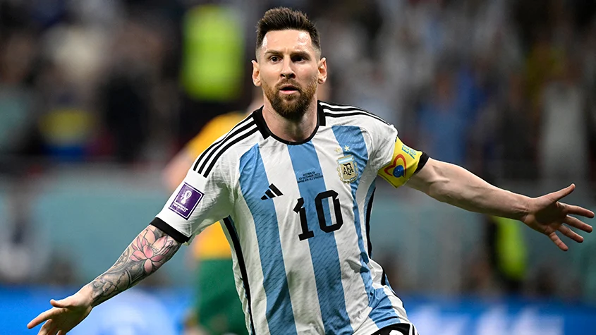
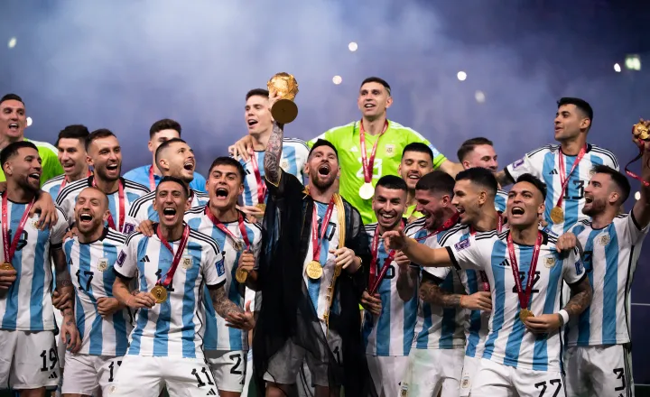

Lionel Andrés Messi Cuccittini (Rosário, 24 de junho de 1987) é um futebolista argentino que atua como atacante. Atualmente joga pelo Inter Miami e pela Seleção Argentina, onde, atuando como capitão, venceu a Copa do Mundo do Catar de 2022. Ele possui um recorde de oito premiações da Bolas de Ouro pela France Football e oito pela FIFA, um recorde de seis Chuteiras de Ouro, em 2020, foi escalado no Dream Team da Bola de Ouro e com 44 títulos conquistados, é o jogador com mais títulos oficiais na história do futebol.
Messi é frequentemente considerado o melhor jogador do mundo e na opinião da grande maioria dos especialistas do esporte, sua qualidade técnica, jogadas, velocidade, habilidade na perna esquerda, trabalho de equipe e extraordinária vocação para o gol, o tornam um dos melhores futebolistas de todos os tempos, com alguns ainda o colocando como o melhor jogador de sempre. Passou quase toda a sua carreira profissional no Barcelona, onde é o maior goleador do clube e recordista de troféus, conquistando 35 troféus, incluindo dez títulos da La Liga (Campeonato Espanhol), quatro títulos da Liga dos Campeões da UEFA e sete Copas do Rei, entre outros.
Um goleador prolífico e um craque criativo, Messi detém o recorde de mais gols pelo Campeonato Espanhol (474), mais gols marcados em uma única edição do Campeonato Espanhol e de uma liga europeia (50), mais hat-tricks na Liga dos Campeões (8), mais hat-tricks pelo Campeonato Espanhol (36), maior assistente do Campeonato Espanhol (205), mais assistências em uma única edição do Campeonato Espanhol e de uma liga europeia (21), maior assistente da Copa América (17) e futebolista com mais gols em um único ano (91). Ele já marcou mais de 800 gols na carreira pelo clube e pela Seleção e é o jogador com mais gols oficiais por um único clube.
Messi foi capitão da seleção albiceleste nessa Copa, onde se sagrou campeão marcando sete gols, incluindo 2 na final contra a atual campeã França.
Na Copa do Mundo FIFA de 2022 tornou-se o maior artilheiro da Argentina em copas com onze gols, ultrapassando a marca de Gabriel Batistuta que possui dez gols.
